GEMS Proprietary Class: A
Direction 5117807-800, Rev# A
GEMS Proprietary Class: A |
The primary function of the Detector is to convert X-ray photons into electrical current, which is sent to the Data Acquisition System (DAS) for signal amplification and analog to digital conversion, before being sent to the Scan Recon Unit for image reconstruction.
The x-rays pass through the patient (or object being scanned) and are attenuated by the density of material. The remaining energy of x-rays pass through to the detector. The detector is composed of tungsten collimator plates, to differentiate the signals to individual channels, and tungsten wires, to differentiate to individual cells of a channel.
Once the x-ray beam is collimated into cells/channels, the photons hit the scintillator pack, which then emits light. The scintillator pack is made up of cast reflector material and a GE exclusive material called Lumex. Lumex is an efficient x-ray absorbtion to light output material, with low afterglow characteristics. The light from the scintillator pack is then picked up by a photodiode array. The photodiode array converts the emitted light into an electric current, which is then passed through to the DAS. The current strength is dependent on the amount of x-ray energy absorbed into the Lumex, which corresponds to the light energy output. There is a photodiode output from each detector cell.
Illustration 1: Detector Modules
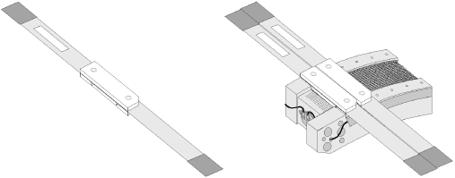
The detector assembly used on this system houses 57 Detector Modules ( Illustration 1). Each module has two sides-an A-side and a B-side (refer to Illustration 3)-with eight (8) diodes or cells per channel per side. Cells are labeled D1 through D8, for a total of 16 cells per channel (both A and B sides). There are 16 channels per module.
Each module uses two flex connections to the Data Acquisition System (DAS). The flex connectors cannot be removed from the module. The flex end is connected to the DAS via a twin elastomer, with 128 signal lines, 18 FET control lines, 1 mechanical ground and 1 signal ground.
The individual modules have separate mechanical and signal grounds. The module mechanical ground is isolated from the detector housing. The detector housing is a mechanical connection to the gantry mounting plate, and is also an electrical connection. The photodiode control circuitry also has an electrical ground (FET logic ground DGND) and a FET bias. The FET bias was designed to allow a +1V bias to be applied to the FET to reduce or eliminate leakage. This line is connected to electrical ground (FET logic ground DGND).
Detector module temperature is regulated by the electrical resistance heater and the thermistor shown in Illustration 2. The heater and thermistor are incorporated into the detector assembly. The overall mass of the assembled detector system ranges between 14 and 16 Kg.
Illustration 2: Detector Layout

Illustration 3: Detector Module
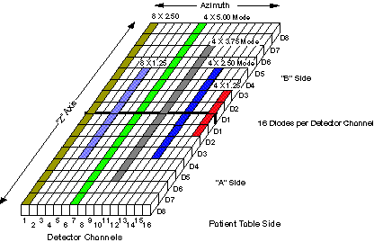
A detector module consists of 16 detector channels.
A detector channel consists of 16 diodes arranged in the “Z” direction. In total, there are 912 detector channels on a detector. A single channel is 1mm in length, in the azimuthal direction. A detector channel is sometimes referred to as a Detector Column.
A row of 16 cells across all detector channels designated by Diode Number AND Side. (Ex. Detector Row D2, Side “A”).
| NOTE: | A Detector Row is not the same as a Scan Slice. A detector row is 1.25mm wide (Z-Direction). |
A cell is a single photodiode, and is 1/16 of a Detector Channel. In other words, there are 16 cells, or diodes, per Detector Channel.
There are 2 “sides” to a Detector, Side “A” and Side “B”. The sides divide the Detector width in half, with 8 Rows per side. Side “A” is closer to the front of the Gantry (or Table side) and Side “B” is toward the back of the Gantry.
The detector is segmented into cells in the Z dimension. Post-patient collimation is provided by the segmentation of the detector cells, not by a separate post-patient collimator (see Illustration 4). The post-patient collimation, along with summation of cells in the Z direction by the detector FET array, determines the Z-axis slice thickness of the scan data.
Illustration 4: Detector Theory - X-Ray Collimation
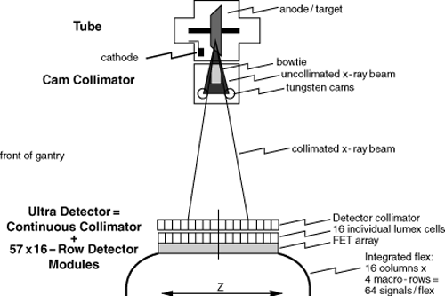
The Z dimension extent of each cell is 1.25mm at ISO center. Cells are summed in Z to produce a macro cell. For eight-slice modes, one or two cells may be summed to form the macro cell. For four-slice modes, one, two, three or four cells may be summed.
All macro cells in the same Z plane form a macro row. A macro row is the detector row or combination of rows that is used to generate a post-collimation slice thickness. A macro row consisting of a single cell in each column produces scan data with a thickness of 1.25mm at ISO center. A macro row consisting of 4 summed cells in each column produces scan data with a thickness of 5.0mm at ISO center. There can be up to 8 macro rows, labeled 4A, 3A, 2A, 1A, 1B, 2B, 3B and 4B.
Each flex transmits 4 macro cells to the DAS per column x 16 columns per detector module = 64 data channels per flex.
Illustration 5: Z-axis X-ray Beam Profile, 4 x 2.5mm Detector Configuration

The collimated beam has a Z-axis profile that consists of the umbra (essentially flat) and the penumbra (sloped) (see Illustration 5, highly idealized). In order to avoid image artifacts, the system must always operate with the umbra region completely covering the detector cells contributing to the selected macro rows. During gantry rotation, the position of the beam moves a small amount in the Z direction, due to various mechanical sags in the gantry, tube, collimator, etc. To ensure that the detector cells are completely covered by the umbra region, the Z dimension extent of the umbra is increased so that the detector is covered regardless of Z-axis beam motion (see Illustration 5). Detector reference cells are used to estimate the actual position of the x-ray beam on the detector, and real-time feedback is provided to the collimator to compensate for beam motion.
The Detector FETs (Field Effect Transistors) are used as switches to combine detector rows, to achieve the prescribed slice thickness. These FETs are physically located in the detector assembly.
| FETs are EXTREMELY ESD SENSITIVE. ALWAYS use ESD precautions when handling the Detector or Detector flexes. A bad FET will require the entire Detector to be replaced. | |
After a Scan prescription is entered at the Host Computer, the Scan Rx parameters are sent to the appropriate controllers. For slice thickness, the parameters are sent to both the Collimator control board, to select the proper Collimator CAM positions, and the DAS Control Board (DCB), to select the macro row width.
There are three (3) sets of FET Control lines driven by the DCB. Each set consists of six (6) lines used as a binary value that gets decoded in the Detector and finally controls Detector Diode selection. The three (3) sets of FET Control are described in Table 1.
Table 1: FET Control Matrix
| FET | DESCRIPTION | CHANNELS |
|---|---|---|
| Low Z | FET control lines for low z-reference channels | DAS Channels 1 - 8 |
| Data | FET control lines for data channels | DAS Channels 9 - 762 |
| High Z | FET control lines for z-reference channels. [Z-Axis tracking.] | High Z-Ref Channels 763 - 768 |
| NOTE: | For a full size version of Illustration 6, click on the pdf icon below. |
Media File 1: Full Size Illustration: FET Control Interconnect

Illustration 6: FET Control Interconnect
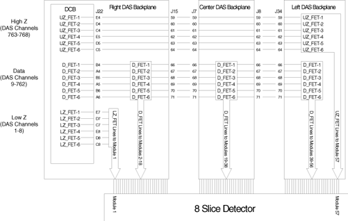
The DCB uses five quad SPST analog switches, which are used to drive the FET_BUS. See Illustration 7.
| NOTE: | For a full size version of this illustration, click on the pdf icon below. |
Media File 2: Full Size Illustration: 4 Slice versus 8 Slice FET Mode Assignments

Illustration 7: 4 Slice versus 8 Slice FET Mode Assignments
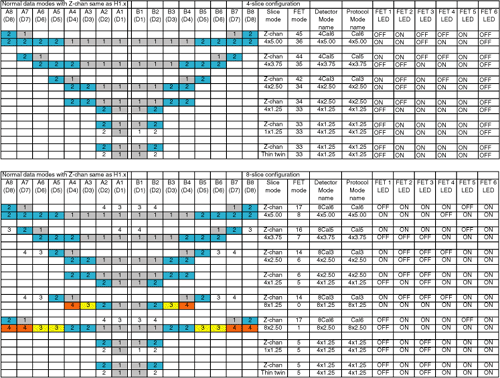
For an illustration of the LEDs, see Illustration 8.
Illustration 8: MDAS LEDs (as viewed with DAS at 12 o’clock)

Illustration 9: MDAS FET Array Arrangement (only one side is shown)
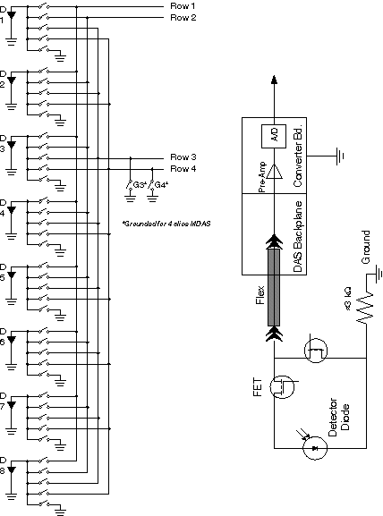
Illustration 10: 8 x 1.25mm Slice
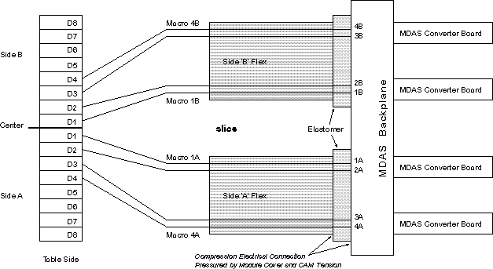
Illustration 11: 8 x 2.50mm
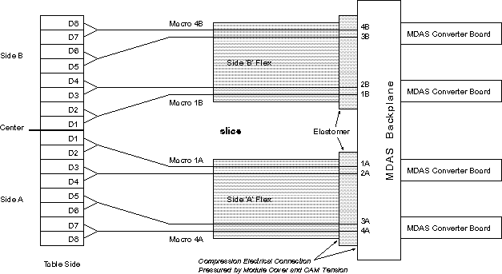
Illustration 12: 4 x 3.75 mm
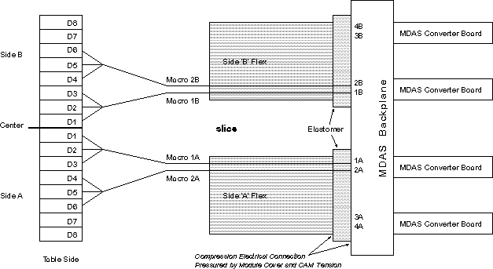
Illustration 13: 4 x 5.00 mm
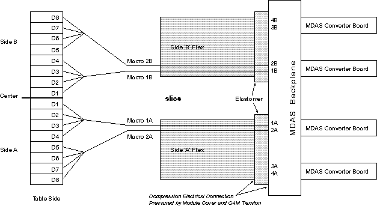
Illustration 14: 8CAL1
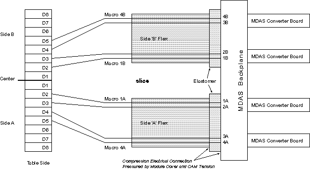
Illustration 15: 8CAL2
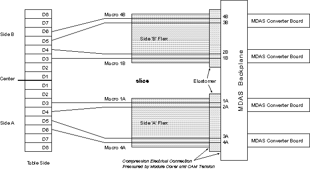
Illustration 16: 8CAL3
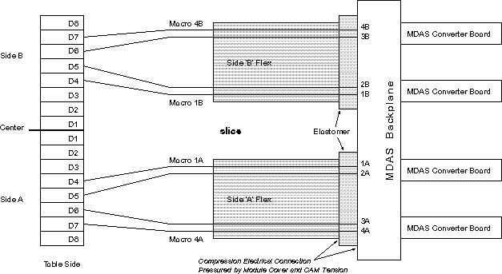
Illustration 17: 8CAL4
Illustration 18: 8CAL5
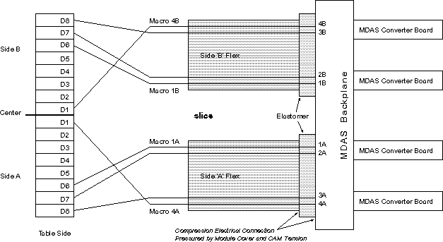
Illustration 19: 8CAL6
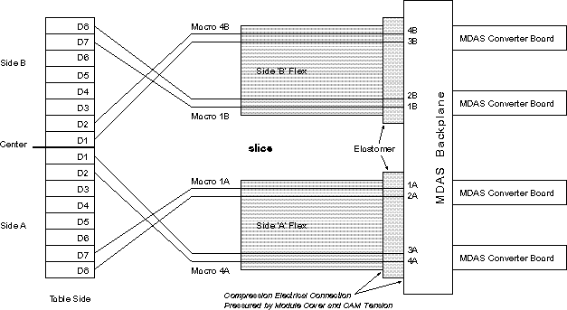
Illustration 20: 8CAL7
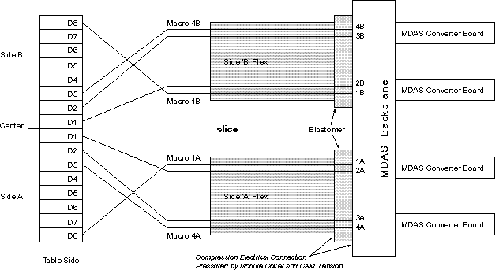
Illustration 21: MDAS Right Backplane Detector-to-DAS Map, Rows 1A, 2A, 3A & 4A
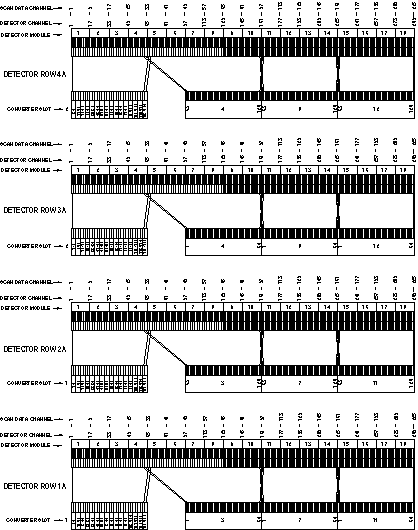
Illustration 22: MDAS Right Backplane Detector-to-DAS Map, Rows 1B, 2B, 3B & 4B
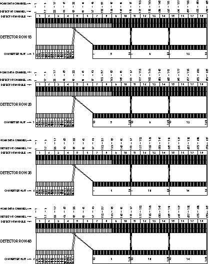
Illustration 23: MDAS Center Backplane Detector-to-DAS Map, Rows 4A, 3A, 2A & 1A
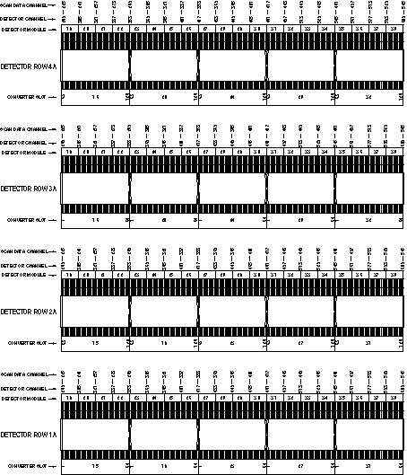
Illustration 24: MDAS Center Backplane Detector-to-DAS Map, Rows 1B, 2B, 3B & 4B
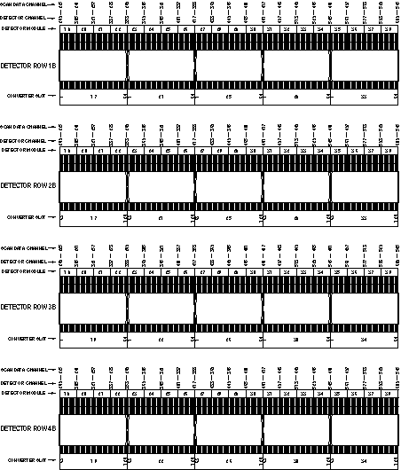
Illustration 25: MDAS Left Backplane Detector-to-DAS Map, Rows 4A, 3A, 2A & 1A
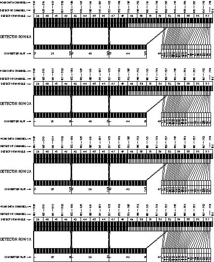
Illustration 26: MDAS Left Backplane Detector-to-DAS Map, Rows 1B, 2B, 3B & 4B
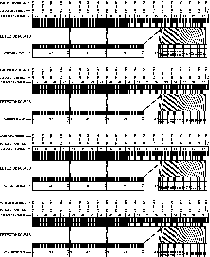
| NOTE: | For a full size version of Illustration 27, click on the pdf icon below. |
Media File 3: Full Size Illustration: DCS to MDAS Architecture Map

Illustration 27: DCS to MDAS Architecture Map

This part is located behind the Right DAS Chassis next to the power supply assemblies. The DMB is used to store non-volatile information such as the Detector Memory Board Revision, which heater/cooler zones are enabled, and on/off temperature set limits to name a few. DMB Memory is divided basically into sections - static memory and dynamic memory. Before a Write to the dynamic portion of On-Detector Memory is performed, a Write to the On-Board Memory is performed first. By writing to the On-Board EEPROM first, this will ensure that the Dynamic portion of On-Detector Memory has a mirror backup located in On-Board Memory. Dynamic data calculated and collected by the DHCB will be written to the DMB Memory in this way once per hour. When reading from the Dynamic portion of DMB Memory, there is no need to copy the data to the DHCB Memory since it was placed there during the Write operation.
The Static portion of DMB Memory is written to the DHCB Memory once per day.
A Background task will execute once a day to compare the contents of both the static and dynamic portions of the DHCB Memory with the DMB Memory to test for DMB Memory corruption.
Illustration 28: Detector Memory Board
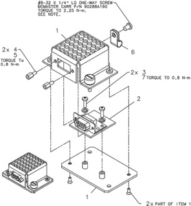
DMB Failures
If the DMB module fails the DHCB will sense this and default to a single zone heater mode. Errors will be posted in the gesys_host.log file indicating the DMB needs to be replaced.
The DMB module can be replaced if necessary. In this event the new DMB, item 2 in Illustration 28, will have blank Static and Dynamic memory. The DHCB will recognize this upon power up and write to the new DMB module, all pertinent configuration data. Note, histories and detector serial number will be lost.
In order to obtain consistent and accurate results, the detector must be kept at a constant temperature. The detector temperature is maintained by hardware circuits on the Detector Heater Control Board (DHCB). The heater is supplied power by the DHCB, while the DHCB gets power from the external 24V power supply.
This differs from LightSpeed and LightSpeed Plus, where the detector heater control and power were supplied by the DCB.
The DHCB monitors detector temperature via a thermistor embedded in the external rail of the detector.
Hardware circuits on the analog section of the DHCB convert thermistor resistance into a digital value that represents the detector temperature. These digital values are kept in a register on the DHCB, and temperature values are averaged over 10 samples. The output is then compared with upper and lower limits. When the temperature value goes below the lower limit, the DHCB enables the heater power supply via a HTR_ON signal. When the temperature value goes above the upper limit, the DHCB turns the heater power off. In this way, the DHCB can keep the detector at a constant temperature.
Illustration 29: Detector Heater Control
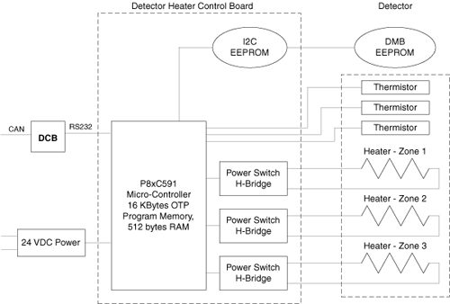
The modules in the detector system are maintained at a temperature of 36 ± 0.3 degrees C (module to module variation) and to 36 ± 0.05 degree C (near thermistor).
The primary function, provided by the 8xC591 microcontroller, is to perform basic control and monitor of temperature in three zones of the Warp 3 detector and report status, faults and errors to the system via the DCB.
Currently only the center zone, which spans the entire length of the detector, is employed in the product design. Zones 1 and 3 are available for future design expansion.
The 8xC591 microcontroller is responsible for providing the following functions:
Power-On Self-Test
Board Initialization
Communication
DMB EEPROM Access
DHCB EEPROM Access
Fault Detection and reporting
Firmware Revision reporting
At the time of power-on or board reset, the microcontroller will perform 2 tests.
The microcontroller's RAM will be checked for proper operation by writing and reading back various patterns.
A checksum verification of the application firmware will be performed. If either of these tests fail the converter card application firmware can not be executed. To indicate this failure the LED will flash rapidly at a 5 Hz rate. This LED will continue to flash until communication with the DCB is established.
If either of the 2 tests fails, the FW will disable all heater outputs.
After power-up or rest, the microcontroller's firmware will perform its initialization functions that are partitioned into 5 tasks - hardware initialization, DMB memory validation, communication, parameter, and CPU Watchdog initialization.
The DCB establishes communication with the DHCB via the RS232 communication interface. The Communication link is a Master (DCB) / Slave (DHCB) configuration. Therefore, the DCB initiates all communication and the DHCB simply responds.
Upon initialization, the temperature control tables in both the DMB and DHCB are accessed and their respective checksums are validated. If either table fails its checksum test, the appropriate error bits are masked into the DHCB.
The general philosophy of status and fault handling is that when a change in status or fault occurs, the associated Status/error flag is set. When the DCB queries the DHCB, the status/error bit mask is sent to the DCB and depending on the type of error, the appropriate action is then taken.
Each DHCB condition/fault is represented in a status/error bit map.
Status/Error Flags
The following are Status/Error Flags. The LED will flash per the table below (i.e., if we have a DHCB EEPROM, the LED will flash twice, then pause off, then repeat).
Table 2: DHCB Error Code and LED Display
| STATUS/ERROR CODE | NUMBER OF FLASHES | DESCRIPTION |
|---|---|---|
| 0x0000 | None | No Error |
| 0x0001 | 1 | General Error. |
| 0x0002 | 2 | I2C Error |
| 0x0004 | 3 | EEPROM Readback Verify Error |
| 0x0008 | 4 | On-Detector EEPROM Error |
| 0x0010 | 5 | On-Board EEPROM Error |
| 0x0020 | 6 | Spare-1 Error |
| 0x0040 | 7 | Spare-2 Error |
| 0x0080 | 8 | Spare-3 Error |
| 0x0100 | 9 | Serial Rec Timeout Error |
| 0x0200 | 10 | Sensor and/or Control Abort Fault |
| 0x0400 | 11 | DHCB Mfg. Identification Table in EEPROM is invalid |
| 0x0800 | 12 | Temperature Control Table in EEPROM is invalid |
| 0x1000 | 13 | I2C ADC Failure |
| 0x2000 | 14 | Clock Loss Logic Error |
| 0x4000 | 15 | DHCB is in Service Mode |
| 0x8000 | 16 | Reset Occurred |